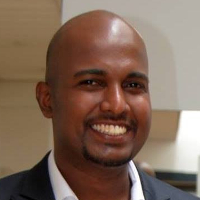
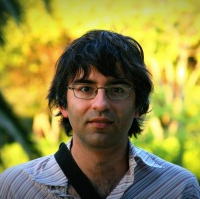
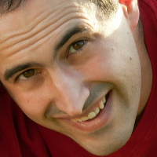

About ReCert
1st International Workshop on Linked Data Repair and Certification (ReCert 2015) is a half-day workshop at the 8th International Conference on Knowledge Capture (K-CAP 2015).
In recent years, we have witnessed a big growth of the Web of Data due to the enthusiasm shown by research scholars, public sector institutions and some private companies. Nevertheless, no rigorous processes for creating or mapping data have been systematically followed in most cases, leading to uneven quality among the different datasets available. Though low quality datasets might be adequate in some cases, these gaps in quality in different datasets sometimes hinder the effective exploitation, especially in industrial and production settings.
In this context, there are ongoing efforts in the Linked Data community to define the different quality dimensions and metrics to develop quality assessment frameworks. These initiatives have mostly focused on spotting errors as part of independent research efforts, sometimes lacking a global vision. Further, up to date, no significant attention has been paid to the automatic or semi-automatic repair of Linked Data, i.e., the use of unattended algorithms or supervised procedures for the correction of errors in linked data. Repaired data is susceptible of receiving a certification stamp, which together with reputation metrics of the sources can lead to having trusted linked data sources.
The goal of the Workshop on Linked Data Repair and Certification is to raise the awareness of dataset repair and certification techniques for Linked Data and to promote approaches to assess, monitor, maintain, improve, and certify Linked Data quality.
Call for papers
Topics of Interest
This workshop aims at providing an insight on the whole process of linked data quality assessment, linked data repair and linked data certification. The workshop topics include, but are not limited to:
- » Quality models for Linked Data
- » Linked Data quality assessment
- » Linked Data diagnosis
- » Linked Data repair
- » Linked Data quality certification
- » Architectures and Services for Linked Data repair and certification
- » User-driven quality repair and certification
- » Benchmarking of repair and certification approaches
- » Representation of provenance and licensing towards trusted certification
- » Representation of quality reports and certification information
- » Linked Data quality in service level agreements
- » Trust and reputation management of Linked Data publishers
Submissions
Submission criteria are as follows:
- » Papers must adhere to the LNCS format guidelines.
- » Papers are limited to 10 pages (including figures, tables and appendices) for long papers and 4 pages for short papers.
- » Papers are submitted in PDF format via the workshop’s EasyChair submission pages.
The accepted papers will be published as CEUR proceedings after the workshop.
The authors of the accepted papers are given a presentation time slot of 25 minutes, with 5 minutes Q&A.
Important dates
| Paper Submission | Monday July 20, 2015 |
Add to Calendar
07/20/2015 11:58 PM
07/20/2015 11:59 PM
Europe/Paris
Recert 2105 - Paper Submission Deadline
Description of the event
Palisades, NY, USA
Organizer
nmihindu@fi.upm.es
false
MM/DD/YYYY
|
| Acceptance Notification | Monday August 3, 2015 |
Add to Calendar
08/03/2015 11:58 PM
08/03/2015 11:59 PM
Europe/Paris
Recert 2105 - Acceptance Notification
Description of the event
Palisades, NY, USA
ReCert 2015 Organizing Committee
nmihindu@fi.upm.es
false
MM/DD/YYYY
|
| Camera-ready version | Monday August 10, 2015 |
Add to Calendar
08/10/2015 11:58 PM
08/10/2015 11:59 PM
Europe/Paris
Recert 2105 - Camera-ready Submission
Description of the event
Palisades, NY, USA
ReCert 2015 Organizing Committee
nmihindu@fi.upm.es
false
MM/DD/YYYY
|
| Workshop | Monday October 7, 2015 |
Add to Calendar
10/07/2015 11:58 PM
10/07/2015 11:59 PM
Europe/Paris
Recert 2105 Workshop
Description of the event
Palisades, NY, USA
ReCert 2015 Organizing Committee
nmihindu@fi.upm.es
false
MM/DD/YYYY
|
Organizing Committee
-

Nandana Mihindukulasooriya
Email: nmihindu AT fi.upm.es
@nandanamihinduOntology Engineering Group, Universidad Politécnica de Madrid
-

Dr. Víctor Rodríguez Doncel
Email: vroddon AT fi.upm.es
@vroddonOntology Engineering Group, Universidad Politécnica de Madrid
-

Dr. Raúl García Castro
Email: rgarcia AT fi.upm.es
@rgcmmeOntology Engineering Group, Universidad Politécnica de Madrid
Programme Committee
Adila A. Krisnadhi, Wright State University
Amapali Zaveri, AKSW Group, University of Leipzig
Anastasia Dimou, Ghent University - iMinds - Multimedia Lab
Dimitris Kontokostas, University of Leipzig
Jose Emilio Labra Gayo, Universidad de Oviedo
Maria Esther Vidal, Universidad Simon Bolivar
Mariano Rico, Universidad Politécnica de Madrid
Michelle Cheatham, Wright State University
Riccardo Albertoni, Consiglio Nazionale delle Ricerche
More to be confirmed ...
Location
ReCert 2015 will be held as part of K-CAP 2015 at the Dolce Palisades Hotel and Conference Center, just outside New York City. The Dolce Palisades is within 30 miles of the NYC airports: John F. Kennedy (JFK), LaGuardia (LGA), Newark (EWR) and Westchester (HPN). The venue is minutes by car to Tarrytown Station, with service to Grand Central Terminal in Manhattan.
Address: Dolce Palisades Hotel, 334 Rte 9w Palisades, New York
Sponsors
-
4V: Volumen, Velocidad, Variedad y Validez en la gestión innovadora de datos (TIN2013-46238)